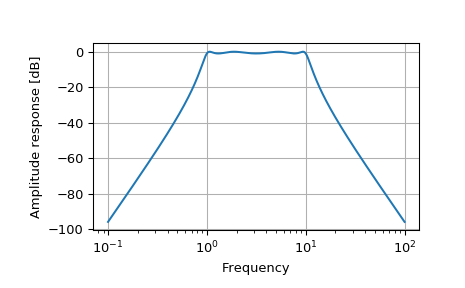

scipy.signal.freqs¶
-
scipy.signal.freqs(b, a, worN=200, plot=None)[source]¶ Compute frequency response of analog filter.
Given the M-order numerator b and N-order denominator a of an analog filter, compute its frequency response:
b[0]*(jw)**M + b[1]*(jw)**(M-1) + ... + b[M] H(w) = ---------------------------------------------- a[0]*(jw)**N + a[1]*(jw)**(N-1) + ... + a[N]
- Parameters
- barray_like
Numerator of a linear filter.
- aarray_like
Denominator of a linear filter.
- worN{None, int, array_like}, optional
If None, then compute at 200 frequencies around the interesting parts of the response curve (determined by pole-zero locations). If a single integer, then compute at that many frequencies. Otherwise, compute the response at the angular frequencies (e.g., rad/s) given in worN.
- plotcallable, optional
A callable that takes two arguments. If given, the return parameters w and h are passed to plot. Useful for plotting the frequency response inside
freqs.
- Returns
- wndarray
The angular frequencies at which h was computed.
- hndarray
The frequency response.
See also
freqzCompute the frequency response of a digital filter.
Notes
Using Matplotlib’s “plot” function as the callable for plot produces unexpected results, this plots the real part of the complex transfer function, not the magnitude. Try
lambda w, h: plot(w, abs(h)).Examples
>>> from scipy.signal import freqs, iirfilter
>>> b, a = iirfilter(4, [1, 10], 1, 60, analog=True, ftype='cheby1')
>>> w, h = freqs(b, a, worN=np.logspace(-1, 2, 1000))
>>> import matplotlib.pyplot as plt >>> plt.semilogx(w, 20 * np.log10(abs(h))) >>> plt.xlabel('Frequency') >>> plt.ylabel('Amplitude response [dB]') >>> plt.grid() >>> plt.show()
